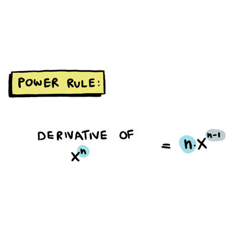
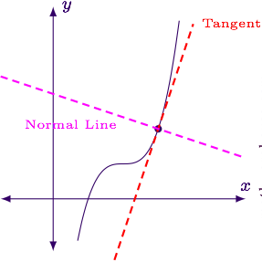
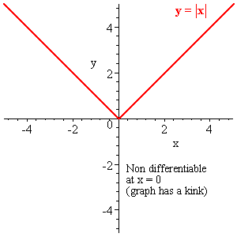
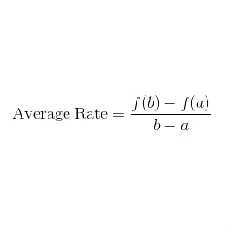
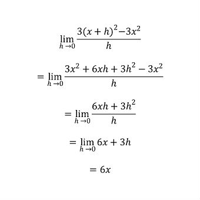

Power Rule
Power Rule is a way that you can find derivative of function.
Any constant in the function will become 0.

Mr. Ross
Mr. Williamson
Mr. Ortega
Alec G
Rick H
Susie Q
Yifan Y
Power Rule is a way that you can find derivative of function.
Any constant in the function will become 0.

Normal line is a line that perpendicular to the tangent line.
m of normal line = -1 / m of tangen line
The x and y stay the same, so just swap the slope and you fine.

The function cannot be derivative if there is a discontinuity or a sharp turn or a vertical tangent on that point.
Discontinuity include hole, jump, V.A.
Sharp turn is when the derivative from the left has opposite sign with the
derivative from the right.
Vertical tangent is when the derivative become infinity.

The average rate of change can find the rate of change between two points with the formula shown in picture.

The instantaneous rate of change can find the rate of change on one point with the formula shown in example of the picture.
